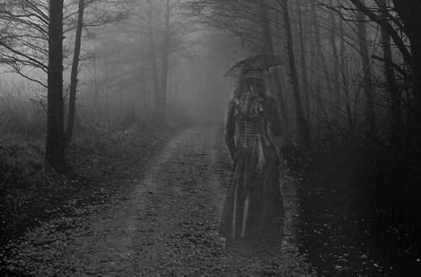

Guardandosi attorno, gli sventurati avrebbero visto una figura vaga apparire nella nebbia, tra gli alberi; una figura di donna che inizia ad avvicinarsi, mostrando la lunga veste nera che ricopre la snella silhouette. A nascondere il volto, un velo nero. Anche così coperta, la sua bellezza è evidente. Dopo qualche secondo, il suo viso arriva quasi a sfiorare quello del passante, privo di resistenza davanti al fascino della signora.
Quando gli porge la mano, non può che stringerla. Una mano gelida, che lo accompagna nei meandri del Parco Sempione, tra laghetti e ponti, tra fontane e angoli nascosti; tra le piante e lungo i viali. All’improvviso, dopo aver attraversato zone del parco che era sicuro di non aver mai visto, l’uomo si ritrova davanti a un cancello di ferro, alto circa tre metri; dietro il cancello, un’imponente villa. Il passante si volta verso la dama, e nonostante sia impossibile cogliere il suo sguardo dietro il velo, ne percepisce una profonda tristezza. Dalla veste, la dama estrae una grande chiave ricoperta di ruggine, con la quale apre il cancello per poi condurre l’uomo attraverso un lungo vialetto e infine davanti alla porta della villa.
Decine di candele illuminano la sala, mostrando pareti listate a lutto e saloni di marmo e stucco ricoperti da insegne funebri. La dama accompagna il suo ospite fino a un grande salone centrale, dal quale proviene una musica innaturale; in un angolo, un’orchestra suona una musica che sembra andare avanti da sempre. Senza mai lasciare la mano dell’uomo, la dama inizia a muovere i primi passi di un ballo che presto si trasforma in una vorticosa e allucinata danza, in cui anche lui viene trascinato. In quello stato di trance, per l’uomo esiste solo la donna che lo accompagna in una danza febbrile. Non riesce a toglierle lo sguardo di dosso e osserva il velo sollevarsi di pochi centimetri senza mai scoprire il viso.
Dopo un tempo ignoto, la dama lo conduce in stanza da letto e si spoglia davanti ai suoi occhi, senza togliere il velo. La donna è bellissima, nuda nel nero della stanza illuminata da poche candele. I due si stringono in un lungo amplesso che riproduce in altra maniera la vertigine della danza.
Pubblicato il 12-02-2020, scritto da Luca Aggio